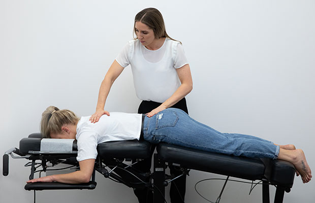
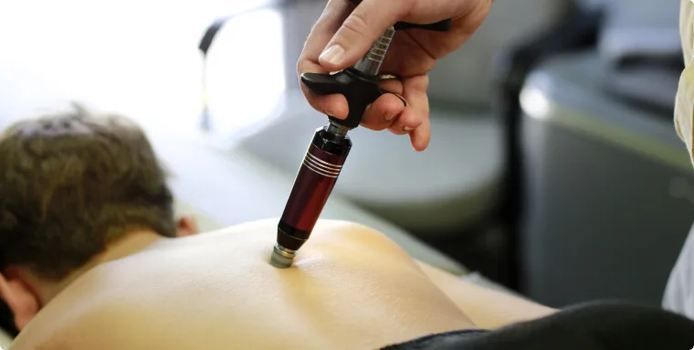

What is Chiropractic Care?
Chiropractic is a healthcare discipline focused on diagnosing and treating mechanical disorders of the musculoskeletal system, particularly the spine. Chiropractors use hands-on spinal manipulation and other alternative treatments to properly align the body's musculoskeletal structure, enabling the body to heal itself without surgery or medication. The practice is founded on the concept that proper alignment of the body's musculoskeletal structure, particularly the spine, will enable the body to heal itself.
Benefits of Chiropractic Care
- Relieves back and neck pain without medication
- Improves posture and spinal alignment
- Reduces inflammation and joint pain
- Enhances athletic performance and recovery
- May improve nervous system function
- Can reduce headache frequency and intensity
- Promotes overall wellness through better physical function
Common Chiropractic Techniques
-
 Spinal Adjustment: The classic high-velocity, low-amplitude thrust to restore joint mobility.
Spinal Adjustment: The classic high-velocity, low-amplitude thrust to restore joint mobility. -
Flexion-Distraction: Gentle, rhythmic stretching technique for disc injuries.
-
Activator Method: Uses a small, hand-held instrument to deliver precise adjustments.
-
 Drop Table Technique: Uses sections of a special table that drop slightly during adjustment.
Drop Table Technique: Uses sections of a special table that drop slightly during adjustment. -
 Spinal Decompression: Stretches the spine to relieve pressure on compressed discs.
Spinal Decompression: Stretches the spine to relieve pressure on compressed discs.
What to Expect During a Visit
A chiropractic session typically includes:
- Initial Assessment: Review of medical history and symptoms
- Physical Examination: Tests of posture, range of motion, and muscle strength
- Diagnostic Imaging: X-rays or other tests may be ordered if necessary
- Treatment Plan: Development of a personalized approach based on findings
- Adjustments: The chiropractor performs specific manipulations to address problems
- Complementary Therapies: May include exercises, stretches, or soft tissue therapy
Incorporating Chiropractic Care into Your Wellness Routine
- Schedule regular maintenance adjustments even when pain-free to maintain alignment
- Perform the prescribed at-home exercises between sessions
- Practice good posture and ergonomics in daily activities
- Consider combining chiropractic care with complementary therapies like massage
- Follow your chiropractor's advice about lifting techniques and physical activity
Safety and Professional Guidance
Chiropractic care is generally safe when performed by a licensed professional. However, it may not be appropriate for everyone, including people with certain conditions like severe osteoporosis, spinal cancer, or high risk of stroke. Always choose a licensed chiropractor and provide a complete medical history before beginning treatment. If you experience unusual symptoms after a chiropractic adjustment, seek medical attention promptly.